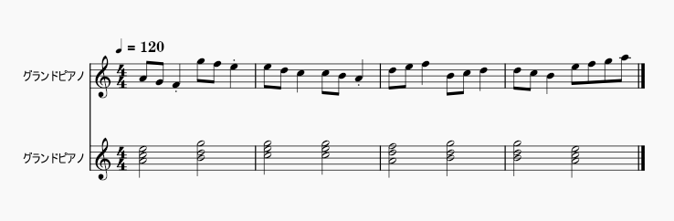

今年も終わりそうなので、今年作ったものを振り返ります。
- 1月
- 2月
- 3月
- 4月
- 5月
- 6月
- つぶやきProcessing
- つぶやきProcessing
- つぶやきProcessing
- つぶやきProcessing
- つぶやきProcessing
- 内定
- つぶやきProcessing
- 単眼ワンドロ 家族
- 7月
- 8月
- 9月
- 10月
- 11月
- 12月
1月
正月イラスト
PixivX（旧twitter）
前日の2022年12月31日の単眼ワンドロで描いた線画に色を塗ったやつ。2人が画像中央に持っている鏡餅は2年前に作ったやつの使い回し。ちなみにこの2人に耳はあります。面倒なので髪で隠れていることにしているだけです。

無題
MIS.Wの与えられたお題で2時間で絵を描く企画で描いたやつ。お題は「王、ピアス、アホ毛、中国、隻眼、ケーキ」。
単眼ワンドロ メイド
X（旧twitter）ロングメイド、クラシカルメイドが大好物なので、参加せずには居られなかった。1時間でも案外描けるものです。
2月
就活
3月
就活
4月
音割れポッター
大学での専攻内容に関連してC++で音プログラミング。GUI上のボタンを押すとwavファイルが生成されるアプリ。
プログラムで生成した音声のスペクトルが音割れポッターにしか見えない。 pic.twitter.com/DPJznly09z
— tsumu (@tsumuzh) April 19, 2023
5月
DVDのやつ
端っこに当たると盛り上がるやつ。リプの方が面白い。
— マイクラやめないで (@shinnokmmm) May 1, 2023
自動作曲アプリ
大学での専攻内容に関連してC++で作った、短いコード進行とメロディを自動で作ってmidiファイルに出力するアプリ。
つぶやきProcessing
初参加のつぶやきProcessing。つぶやきProcessingは、Processingを用い、1ポスト（旧ツイート）内に収まる文字数のコードでアートの表現に挑戦するものです。
#つぶやきProcessing
— tsumu (@tsumuzh) May 29, 2023
float p,d=30;void setup(){size(900,900);}void draw(){p+=0.1;background(255);translate(450,450);for(int i=-15;i<=15;i++)for(int j=-15;j<=15;j++){strokeWeight(d-sqrt(i*i+j*j)*sin(p));point(i*d,j*d);}} pic.twitter.com/hXXuJIgq0h
つぶやきProcessing
つぶやきProcessingにドはまりした。終わりの見えない就活の合間の息抜き。
#つぶやきProcessing
— tsumu (@tsumuzh) May 31, 2023
float p;void setup(){size(720,720);colorMode(HSB,72);}void draw(){p+=.001*PI;background(0);translate(360,360);for(int i=72;i>0;i--){stroke(i,72,72);line(i*5*cos(p*i),i*5*sin(p*i),0,0);}} pic.twitter.com/1aZgbUb5ad
6月
つぶやきProcessing
つぶやきProcessingでマンデルブロ集合を出力してみたやつ
#つぶやきProcessing
— tsumu (@tsumuzh) June 3, 2023
float a,b,c,d,x,y,p,w=600,h=400;int n;void setup(){size(600,400);p=.005;}void draw(){n++;for(int i=0;i<w;i++){for(int j=0;j<h;j++){a=i*p-2.2;b=j*p-1;x=0;y=0;for(int k=0;k<n;k++){c=(x*x)-(y*y)+a;d=2*x*y+b;if(c*c+d*d>8){point(i,j);break;}x=c;y=d;}}}} pic.twitter.com/NmVwqbzvJu
つぶやきProcessing
セルオートマトンもどき。これを投稿した2時間後に内定が出て就活が終わった。
#つぶやきProcessing
— tsumu (@tsumuzh) June 5, 2023
int n=640,s=n*n,m[]=new int[s],i,a;void setup(){;colorMode(RGB,1);size(640,640);for(;i<s;i++)m[i]=(int)random(2);}void draw(){for(i=n;i<s-n;i++){a=m[i]+m[i-1]+m[i+1]+m[i-n]+m[i+n]>3?0:1;stroke(a);point(i/n,i%n);m[i]=a;}} pic.twitter.com/3O8dJrMj4z
つぶやきProcessing
自信あったのに反応が一番少なかった
#つぶやきProcessing
— tsumu (@tsumuzh) June 7, 2023
float p,d=30;void setup(){size(900,900);}void draw(){p+=0.1;background(255);for(int i=0;i<d+1;i++)for(int j=0;j<d+1;j++){float f=sin(p+i+i*j); strokeWeight(9*(f+1));point(i*d+f*d,j*d+f*d);}} pic.twitter.com/CrYMsTobt0
つぶやきProcessing
つぶやきProcessingを投稿した15分後に投稿したやつ。15分前の方が自信あったのにこっちの方が反応が多かった。
#つぶやきProcessing
— tsumu (@tsumuzh) June 7, 2023
float p,d=30,f;void setup(){size(900,900);}void draw(){p+=.1;background(255);for(int i=0;i<d*d;i++){f=noise(p+i);strokeWeight(d*f);point(i+d*sin(p+i),(i%d)*d);}} pic.twitter.com/GTTqFppAYT
つぶやきProcessing
背景の色を周期的に変えてみたらけっこう面白くなった。
#つぶやきProcessing
— tsumu (@tsumuzh) June 8, 2023
float p,d=30,f;void setup(){size(900,900);}void draw(){p+=.01;background(255*sq(sin(p)));for(int i=0;i<d*d;i++){f=p+i;stroke(sin(f)*255);strokeWeight(d*sq(sin(f)));point(i-d*tan(f),(i%d+cos(f))*d);}} pic.twitter.com/mcdBnRUgNY
内定
X（旧twitter）内定記念に短時間で描いたやつ。嬉しさのあまり作画崩壊が多々あるのが見どころ。この画像のパロディだが、パロディ元の元ネタがわからない。そもそもパロディであることに気付けた人はいないだろう。
つぶやきProcessing
正弦波でいろいろやってみた
#つぶやきProcessing
— tsumu (@tsumuzh) June 22, 2023
float n=30,p,i;void setup(){size(900,900);stroke(255);}void draw(){p+=.01;background(0);for(i=0;i<n*n;i++){strokeWeight(i/n);point(i%n*n+n/2,n*n*sq(sin(p+i/n)));}} pic.twitter.com/Hld4l7k4Bh
単眼ワンドロ 家族
X（旧twitter）久々に参加してみた単眼ワンドロ。正直自信はない。
7月
ポン
音量注意。大学の専攻。左のバーの上下方向の座標に比例して音の周波数が変わる。
これが今日の成果
— tsumu (@tsumuzh) July 3, 2023
音の動的生成 pic.twitter.com/h8o8IJ2KrO
アチ
PixivX（旧twitter）
そんな服着てたら暑いに決まってるだろ。7月の単眼の日に描いたやつを清書したやつ。
8月
¯\_(ツ)_/¯
9月
箱落とし2
当サイトのリンクunityroom
Unity1週間ゲームジャム（unity1week）で作ったやつ。お題は「１ボタン」。だからマウスの左だけでできるようにした。箱落とし1はちょうど1年前のunity1weekで作ったこっち。実はこの1年前のunity1weekの時に作ろうとしたが、やめたという経緯がある。
#unity1week
— tsumu (@tsumuzh) September 20, 2023
こんなやつです。見かけたら遊んでやってください。 https://t.co/OmHDAL3VmM pic.twitter.com/WSo6bivqSa
カレンダーの絵
X（旧twitter）MIS.Wのカレンダーを作る企画で描いたやつ。7月分。背景等はunity。
10月
単眼の日
PixivX（旧twitter）
単眼の日。新しいアイコンも兼ねている。初めてまともに背景を描こうとしたが、めんどくさくなった。
クリックできる地図
当サイトのリンクPlague Incの地図を作りたくなった。架空世界でも使える。現状の実装はおそらくあまり効率のいい実装ではない。
#スーパーゲ制デー
— tsumu (@tsumuzh) October 14, 2023
ストラテジーゲームで使うための地図。地図をクリックするとハイライトされて地名が表示される。地名は適当。 pic.twitter.com/Oz3DUpExF4
11月
卒業制作
詳細はまだ言えない。ライブラリ的なのを1つとゲームを3つ作った。
12月
¯\_(ツ)_/¯
更新履歴
- 2023/11/30
- 記事作成